Jing-Zhang · Discovery Line
Using Jing-Zhang Railway Heritage Park as a public spine, this proposal turns urban questions into scientific and civic action that can be falsified, retested, and exited.
Jing-Zhang · Discovery Line
The city sets the questions; AI takes the test.
90-Second Opening
A question from an ordinary person has to travel all the way from “the city sets the question” to “AI answers under constraint” to “the public decides.”
First, it enters AI Origin. A synthetic persona can submit it by paper and pen, telephone, an accompanied site walk, or human translation. A person clarifies the question before controlled validation begins.
Second, anything that needs instruments or protocol review goes to Zhongzhiyuan for calibration and independent retesting, with failures and limits made public.
Third comes limited first use. Only an option that meets the authorization conditions may be tried at Dazhongsi or another duly empowered setting; duly empowered actors and affected people then decide whether to continue, modify, not adopt, or remove it.
Discovery Passport M01 keeps the question, the three options, responsibility, retesting, stopping, and restoration under one ID. It is not a physical card, ticket, sensor credential, or automatic switch. The three M01 options are: A, fixed loading windows, static parking spaces, and human guidance; B, lightweight, reversible, anonymous scheduling that does not track or evaluate individual couriers; and C, professional kerbside development handed to duly empowered actors and professional teams.
The safety line is simple: if Human Takeover is missing, the answer is NO-GO. The AI layer goes dark, the prior state and non-AI timetable return, and everyday tasks continue.
Responsible person: UNKNOWN. Stop authority: UNKNOWN | pending confirmation of the formal responsible entity. Retest date: UNKNOWN. Restoration cost: UNKNOWN. Current status: Not approved · Not authorized · Not implemented.
Label: synthetic persona. These personas are not interview findings. The persona is not presented as the author’s or any real person’s lived experience. Desktop simulation | Not a field test | Does not represent a real project event.
Minimum Public Commitments
Not approved · Not authorized · Not implemented
- Everyday coordination and ordering still use paper and pen, telephone, human coding, and joint meetings; AI does not set priorities automatically.
- Water-quality and safety conclusions come only from manual instruments and fixed observation points; without real data, no conclusion is published.
- Users and accessibility professionals audit public wayfinding and facilities, while static wayfinding remains available.
- Deliveries retain fixed loading windows, static parking spaces, and human guidance, without tracking courier locations.
- Medical consultation uses telephone, printed directories, and human inquiry only; it does not diagnose, allocate queues, or promise appointment availability.
- Teachers lead students outside with paper maps and manual instruments, without student tracking or automated grading; community activities use human inquiry, static wayfinding, a fixed activity schedule, and a no-activity control day.
Public Summary: The One-Minute Guide to the Six Gates and Five Ledgers
For reviewers and residents: this proposal has not been approved or authorized for implementation, and nothing described here has happened on site. Current status: Not approved · Not authorized · Not implemented. Desktop simulation | Not a field test | Does not represent a real project event.
To move forward, a project must pass six gates: data and boundaries, problem value, scientific protocol, urban first use, projects and funding, and construction and operations. Every transition leaves records of responsibility, materials, and review; if any gate is unmet, the project does not advance automatically.
Five ledgers are kept at the same time: planning and design, public foundations, scenario validation, operations and maintenance, and social coordination.
Zhongzhiyuan handles retesting; AI Origin clarifies questions before validation; Dazhongsi may conduct limited first use only after authorization, with exit available at any time. M01 is the only candidate whose responsibility chain is developed in greatest depth.
Responsible person: UNKNOWN. Stop authority: UNKNOWN | pending confirmation of the formal responsible entity. Retest date: UNKNOWN. Restoration cost: UNKNOWN.
The fallback is a route that works without AI: fixed loading windows, static parking spaces, and human guidance; individual couriers are not tracked or evaluated. If the AI layer fails, it goes dark, the prior state and non-AI timetable return, and everyday tasks continue.
Across the scenarios, G01, W01, R02, M01, H01, E01, and C02 retain the itemized human baselines above and are not repeated here. H02 remains a human tabletop simulation and uses no real patient data without hospital authorization. C01 uses shopfront inventory and human interviews without consumer profiling or behavioural manipulation.
Original Master Introduction (Retained)
“Jing-Zhang · Discovery Line” is not a street for displaying AI, but a Conceptual Recommendation: it sends the urban problems of ordinary people for validation, then returns findings that withstand retesting to everyday life. Ordinary people must be able to understand what is being changed, while reviewers must be able to trace where each judgment came from; what is unknown must be stated as unknown. The line starts when residents raise a question, passes through calibration, retesting, and limited first use, and ultimately returns both the conclusion and the responsibility attached to it to public decision-making.
Key Conclusions
Translated from the Chinese source of truth; where the two versions differ, the Chinese text prevails.
1. What this is: a “Discovery Line” covering about 43.6 square kilometres — the city turns real problems into exam questions, AI takes the test on controlled street segments, and only what passes enters everyday life. 2. What AI does, and only does: validation within limited times and on limited segments, with withdrawal possible; it only answers, and does not mark the paper. 3. Who decides: duly empowered actors make decisions through human judgment; each scenario has a “Discovery Passport,” and not one step is taken before the responsible person signs. 4. What happens when something fails: stop immediately, withdraw it in place, and restore the street to its prior state; responsibility for restoration is written into the passport. 5. How ordinary people are affected: the same task can still be completed without any smart device; paper and pen, telephone, and human service routes remain available throughout. 6. What changes in space: one spine, two tracks, and three stations; Figure 1 shows what may and may not change, and the three key areas total about 368.4 hectares. 7. Who takes over: five ledgers state who is responsible for planning, foundations, validation, operations, and coordination; six gates decide whether to proceed. 8. Which figures are real: areas and ratios can be recalculated on the spot from the package geometry; the source chain is in Figure 5 and sources. 9. What remains unknown: responsible persons, retest dates, restoration costs, and precise boundaries — state them honestly as UNKNOWN, without invention. 10. How to verify it: the webpage presents the main line in ten minutes; each chapter of the body starts with a conclusion; the machine-readable package can be recalculated directly.
Design Basis and Source List
Before designing anything, we sort the evidence into four piles. First come the Open Call announcement, the agent-oriented taskbook, and the review rules: they define the three-level scope, the three key areas, and the six mandatory tasks every entry must answer. Second come the registered public policies of the national government, Beijing, and Haidian. They point toward directions such as Urban Renewal, Scenario Access, and AI-enabled scientific research, but they do not replace this proposal’s own spatial evidence. Third come completed primary-source case studies, which explain the mechanisms that may be adapted and the boundaries that must not be copied. Fourth come our ten scenario cards, nine geometry layers, metrics, and matrices, which turn the Conceptual Recommendation into a traceable working draft that can be checked again. Source Standard
The existing-conditions diagnosis still has explicit gaps. The formal boundary, parcel-level Regulatory Detailed Planning, land rights, surveying, existing buildings, transport and public-service baselines, municipal capacity, ecological and heritage inventories, funding, and operating responsibility are consistently marked UNKNOWN / pending confirmation from formal materials wherever the current materials cannot establish them. These gaps are not replaced with zeros or blanks, nor are they filled by conceptual drawings, synthetic personas, or model inference. Depth
The provisional boundary used in this draft is a rough, temporary working surface. It is not an Official Planning Boundary and cannot serve as a basis for authorization, precise area calculation, statutory control lines, land-rights boundaries, or engineering limits. It is used only to organize informal design discussion, locate layers, and recalculate the current design model; once formal polygons become available, all nine geometry layers and all three metrics must be recalculated. The current constraints layer is empty because formal control materials have not yet been obtained, not because the site has no constraints. Spatial data Spatial data
The naming and Logo required by the taskbook, eight ecosystem cases, ten scenario cards, three AI pilgrimage landmarks, cultural narrative, and long-term operations are each developed in the body of the proposal. Complete source identities, licenses, formulas, task coverage, responses to standards, and design-depth coverage remain in machine-readable files; the body places only evidence pointers adjacent to the relevant judgments and remains independently readable when those pointers are removed. Source Standard
One set of judgment boundaries applies throughout the proposal and is stated here once: related policies indicate direction but do not automatically become commitments of this project; conceptual drawings organize relationships but do not fill data gaps; AI only organizes, compares, and flags, while people authorize, choose, and correct. Anything that does not qualify is stopped, withdrawn, or restored to its prior state. On this basis, each chapter retains only the conditions directly adjacent to its judgments and hands the next step to the corresponding planning, transport, municipal, architectural, or operations team.
Three-Level Scope Framework
The three levels answer different questions and call for different depths of work. The first, the Coordinated Research Area of about 43.6 square kilometres, looks at how regional industry, universities, research institutions, public services, and the future city can work together. The second, the Overall Design Area of about 11.4 square kilometres, organizes the renewal structure, Land-Use Plan, transport, municipal systems, Blue-Green Space, and Public Space. The third comprises the three Key-Area Detailed Design Areas, totalling about 368.4 hectares, where professional teams can carry the design further. These area figures come from announcement-level materials. The current geometry is for concept discussion and checking only; it does not turn rough key-area envelopes into precise control boundaries. The three-level drawing shows both what each level must answer and how later teams can move from regional research to parcel-level work. Standard Depth
The overall structure is one spine, two tracks, and three stations. The spine relies on Jing-Zhang Railway Heritage Park and its Public Space network rather than drawing a fictitious additional railway. The “Public Task Track” asks whose difficulties are addressed, repaired, or exited; the “Scientific Discovery Track” asks how the same difficulty becomes a hypothesis, protocol, calibration, and independent retest. The three stations are Zhongzhiyuan’s “Retest Workshop,” AI Origin’s “Problem and Validation Foyer,” and Dazhongsi’s “First-Use and Exit Street Room.” They are not three exhibition halls, but three responsibilities that cannot substitute for one another. Following the sequence “question intake—protocol calibration—limited first use,” professional teams can progressively develop the spatial, staffing, and maintenance interfaces at each station. Depth
Questions may enter at AI Origin through paper and pen, telephone, an accompanied site walk, or human translation. The parts requiring instruments and protocol review proceed to Zhongzhiyuan for calibration, where failures and limits of applicability are disclosed. Only an approach that meets the authorization conditions may proceed to limited first use at Dazhongsi or another duly empowered setting. Results return both to public decisions and to the next round of hypotheses, sampling protocols, or tool versions. If the slowest group does not improve, or responsibility for restoration cannot be explained, the process stops instead of escalating. Each round writes four fields—question, protocol, responsibility, and version—back to the same record so that the next round can retest directly from it.
The three positionings are the “Centennial Jing-Zhang Cultural Belt,” the “Metropolitan AI Life Experience Belt,” and the “AI Integrated Innovation Belt.” The five functions are the “Full-Stack Independent AI Innovation System,” “World-Class AI Innovation Ecosystem,” “New Paradigm of AI-Enabled Scenario Enablement,” “Vibrant Intelligent AI City,” and “Global Voice in AI Governance.” The three zones are Zhongzhiyuan AI Independent Innovation Acceleration Area, Beijing AI Origin Community, and Dazhongsi AI Industry Cluster; the two wings are Zhongguancun Technology Services Wing and Xiaoyue River Scenario Enablement Wing. Together they form one stoppable chain of work, not thirteen unrelated slogans. All subsequent spatial and operational proposals assign objects, responsibilities, and review nodes along this chain. Spatial data
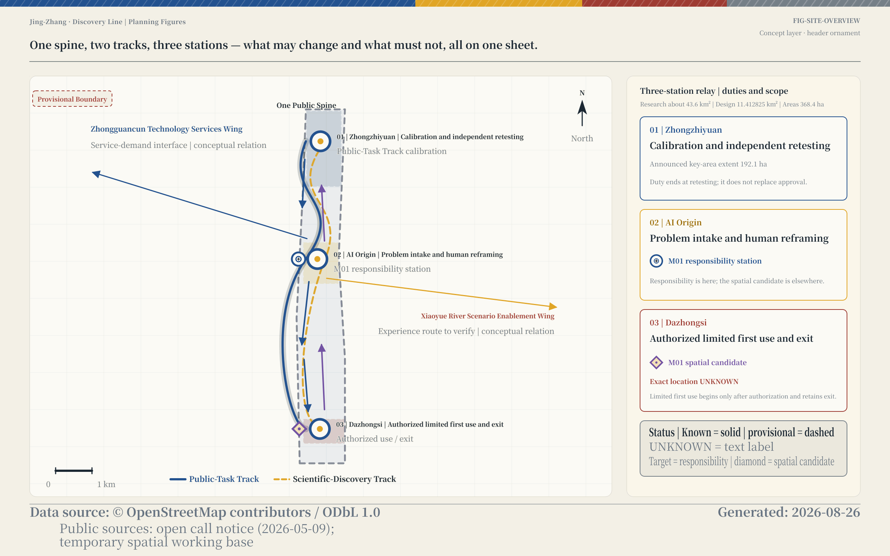
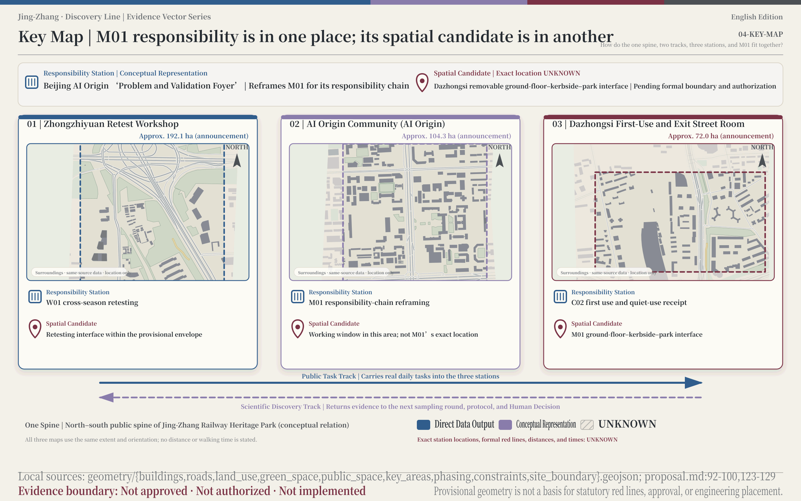
Coordinated Research Area: Industry and Future City Research
The proposal is called ‘Jing-Zhang · Discovery Line.’ ‘Jing-Zhang’ points to the century-old railway and the public spaces along it. ‘Discovery’ is the method: find a problem, form a hypothesis, check it again, then ask people to decide. ‘Line’ means both the main public route through the heritage park and the traceable record left by every step. In one sentence: bring urban questions into science, and return validated discoveries to everyday life. There is no second name beneath it. The ten scenario cards, three spatial prototypes, and annual operations all belong to the same line and use the same identity and story.
The user-approved Near-Mountain primary mark uses staggered nearby mountains to form its outer silhouette. Inside the opening, the upper portion evokes the Hall of Prayer for Good Harvests at the Temple of Heaven, while an abstract golden line extends from the mountains toward the single vermilion dot at the centre of the wordmark; “Jing-Zhang” and “Discovery Line” form the identity on either side of that dot. This is the proposal’s conceptual identity. It does not present the mountains, the Temple of Heaven, or the golden line as built landmarks, and it does not replace a survey of actual cultural resources, a trademark clearance search, or font licensing. Once the asset team receives the cultural survey, trademark, and font materials, it can check the existing silhouette, graphic, and wordmark layers one by one. Standard
The eight cases first answer “what to borrow and where to place it”; their limits of applicability are then checked together in the compliance chapter:
| Case | Transferable mechanism | Jing-Zhang connection | Adaptation for Jing-Zhang |
|---|---|---|---|
| Punggol Digital District | Coordination among a university, businesses, Public Space, and digital operations | The three stations and the school–community, research, and first-use spatial chain | Divide the coordinating relationship into spatial, curriculum, and operational interfaces at the three stations Source |
| Seoul AI Hub / Yangjae | Education, incubation, R&D, and international networks organized by stage of growth | Zhongzhiyuan and Zhongguancun Technology Services Wing | Match retesting, services, and conversion support to each stage of growth Source |
| Toyota Woven City | Limited first use, user feedback receipts, and adjustment in the next round | Test future life through resident feedback | Use resident feedback to decide whether to continue, modify, or exit Source |
| Detroit–Ann Arbor (Michigan Central + Mcity) | Heritage, Public Space, community questions, and “controlled retesting before limited first use” | The public spine, AI Origin, Zhongzhiyuan, and M01 | Connect the public nature of heritage and controlled retesting to the same chain of responsibility Source Source |
| Curiosity Lab at Peachtree Corners | A bounded first-use interface in real kerbside and everyday settings | Dazhongsi M01 | Enter real kerbside conditions in the M01 admission form first Source |
| Testbed Helsinki | Open calls, case-by-case admission, allocation of responsibility, and separation from procurement | Annual cycle and entry conditions for W01, M01, and C02 | Separate solicitation, admission, responsibility, and procurement into four steps Source |
| Berkeley A-Lab | Hypotheses, protocols, measurement, failure classification, the next round, and disclosure of uncertainty | Zhongzhiyuan’s Discovery Passport and W01 cross-season retesting | Record hypotheses, protocols, errors, and failures in the Discovery Passport Source |
| Chicago Array of Things | Minimum data collection, calibration, and retesting, with separate privacy, scientific, and public-governance review | Zhongzhiyuan and W01; M01 borrows only the governance boundaries | Organize W01 retesting around minimum data collection and separate review Source |
The conceptual Jing-Zhang ecosystem is therefore not “a list of companies plus computing-power terms.” Zhongzhiyuan is responsible for calibration, protocol comparison, independent reproduction, public explanation, and equipment retirement. AI Origin connects resident questions, university research, controlled validation, ethical rights, and open learning. Dazhongsi places technologies that pass the thresholds into limited first use amid dense everyday life. Zhongguancun Technology Services Wing only translates Discovery Passports with stated evidence status into eight types of service needs—land, space, industry, funding, talent, computing power, data, and scenarios—while duly empowered actors still conduct human due diligence and sign-off. Adoption, further evidence gathering, suspension, retirement, or return to research are all acceptable outcomes. Source
“1+X+1” integration is expressed only as a direction-level concept: the Discovery Passport connects public questions, validation conditions, and exit responsibilities shared by AI and other leading industries within the same chain of work. The specific industry combination, functional proportions, spatial organization, and implementing actor are all UNKNOWN.
Regional Innovation Synergy Matrix | How Five Counterparts Enter and Exit Through Two Tracks and Three Stations
The eight international cases show transferable mechanisms; they cannot replace interfaces with local and regional counterparts. This section uses the two tracks and three stations as external interfaces: the Public Task Track receives problems, rights, and service needs, while the Scientific Discovery Track returns protocols, retests, and versioned findings; each counterpart must define inputs, responsibility, and exit conditions before a duly empowered actor decides whether it may enter. The entries below are proposed interfaces only and do not mean that any collaboration has occurred.
| Synergy counterpart | Exchangeable elements | Jing-Zhang interface | Entry conditions | Exit conditions | Evidence status |
|---|---|---|---|---|---|
| Beiwei Community | Resident problem briefs, an accessible joint-walk protocol, W01 / M01 / C02 scenario cards, anonymized receipts, and public-knowledge summaries | AI Origin + Public Task Track receives problem briefs; Zhongzhiyuan + Scientific Discovery Track retests; handoffs D02 / D06 | Problem scope, affected people, human-service window, minimum data, and proposed responsible roles are stated; the first two of the six gates pass | Stop and record D06 if consent is withdrawn, the slowest group worsens, human takeover fails, or restoration responsibility remains UNKNOWN | Listed by the official taskbook as a synergy counterpart; public material is background only; specific interface, entity, and authorization UNKNOWN |
| Future Science City | Cross-disciplinary research questions, protocol templates, researcher retest places, a W01 cross-season data dictionary, and reproducible reports | AI Origin + Public Task Track translates city problems into protocols; Zhongzhiyuan + Scientific Discovery Track independently retests; handoffs D04 / D06 | One hypothesis, protocol, version, data rights, calibration baseline, and proposed responsible roles are entered in the Discovery Passport | Return to research and record D04 / D06 if protocol versions diverge, data rights are unclear, independent retesting fails, or the public problem is not answered | Listed by the official taskbook as a synergy counterpart; public material is background only; specific interface, entity, and authorization UNKNOWN |
| Huairou Science City | Instrument-retest requests, calibration samples, cross-device retest protocols, error logs, and public method notes | Zhongzhiyuan + Scientific Discovery Track handles calibration and error review; AI Origin + Public Task Track handles public explanation; handoffs D04 / D06 | Instrument scope, sample safety, data permission, calibration baseline, and failure classes are checkable | Stop and return the result to the retest ledger if scheduling or sample conditions fail, error exceeds the protocol boundary, results cannot be reproduced, or responsibility is not accepted | Listed by the official taskbook as a synergy counterpart; public material is background only; specific interface, entity, and authorization UNKNOWN |
| Beijing Economic-Technological Development Area | Candidate product test notes, maintainable supply lists, M01 / C02 scenario cards, spare-and-removal steps, and industry-service requests | Dazhongsi + Public Task Track receives authorized limited first use; Zhongzhiyuan + Scientific Discovery Track retests; handoffs D03 / D05 / D06 | Road-use, fire-safety, accessibility, site, data, maintenance, and restoration responsibility pass the relevant six gates | Remove the trial and close D05 if hazards rise, the slowest group worsens, maintenance or restoration has no recipient, or responsibility remains UNKNOWN | Listed by the official taskbook as a synergy counterpart; public material is background only; specific interface, entity, and authorization UNKNOWN |
| Beijing-Tianjin-Hebei | Cross-city problem catalogue, shared field dictionary, retest-protocol versions, open talent-course materials, and public-outcome summaries | AI Origin + Public Task Track gathers questions; Zhongzhiyuan + Scientific Discovery Track retests under stable object IDs; handoffs D01 / D06 | Local definitions, object IDs, data rights, retest protocols, and proposed responsible roles align | Stop sharing and retain version differences if definitions drift, geographic extrapolation lacks evidence, any party withdraws, or the retest cannot be reproduced | Listed by the official taskbook as a synergy counterpart; public material is background only; specific interface, entity, and authorization UNKNOWN |
Note: this table defines proposed interfaces only. Nothing is signed or authorized; adoption is for duly empowered actors to decide. All cadence, responsibility, funding, sites, and implementation arrangements remain UNKNOWN and cannot be read as evidence that real-world collaboration has occurred.
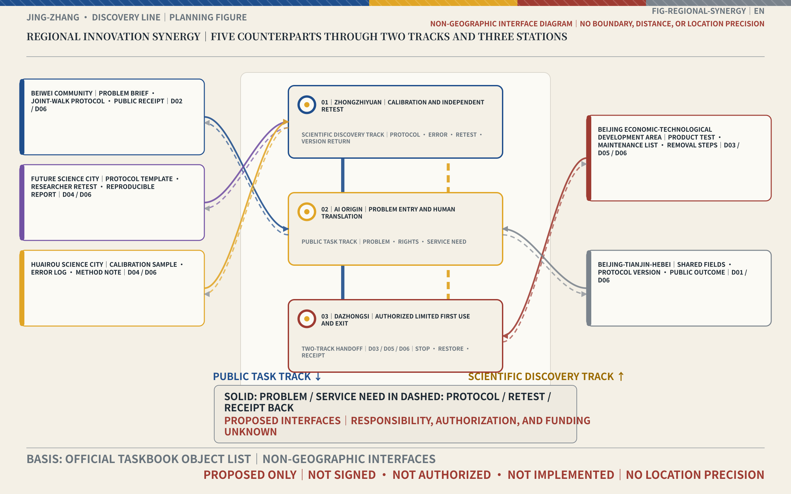
Overall Design Area: Urban Renewal and Regulatory-Plan-Level Urban Design
The Overall Design Area starts with the city that is already here; it does not assume clearing everything away and rebuilding. One base map brings together the park’s main route, the three stations, east–west links, walking, cycling and rail transfers, green and drainage resilience, public services, New Infrastructure, and industrial space. Joining industry to space does not mean stamping ‘AI’ on every parcel. It means giving research, testing, first use, daily service, and maintenance the right places, while ordinary life continues after the technology leaves. Later teams can add professional evidence to the same map without changing the spatial relationships or object IDs. Standard Depth
Regulatory-plan-level Urban Design must answer ten categories of content. This draft delivers them in two groups: for matters that can be supported by the current provisional working surface and conservative OSM base material, it provides structural relationships and an order of judgment. “Must answer” does not mean filling the gaps with invented figures: Floor Area Ratio, height, Building Coverage Ratio, setbacks, building capacity, and engineering alignments are marked UNKNOWN / pending confirmation from formal materials, with the formal material required to close each item identified individually. Professional teams receiving this draft can continue directly from this gap table. Standard
The Conceptual Recommendation for territorial spatial planning attaches an evidence status to every spatial object: known, provisional, UNKNOWN, reversible trial, or subject to statutory procedure. land_use expresses only functional relationships within the current design model and cannot establish land rights or statutory land use. buildings is a conservative subset of OSM Building Footprints and cannot establish use, height, ownership, or a Demolish–Renovate–Retain conclusion. Once formal materials replace them, the layers, metrics, and explanations should be updated under the same object IDs, without using a new slogan to obscure old evidence. Stable object IDs allow professional teams to replace only the layers that change and track which conclusions must be recalculated in parallel. Spatial data Spatial data
The order of judgment for the overall design remains simple: first verify the actual boundary, existing conditions, and responsibility; then determine whether the public tasks are continuous; next decide whether a spatial action is necessary, reversible, and maintainable; and only then discuss professional development. After each layer of review is completed, the passed items, gaps, and responsible party are written back to the same object so the next profession can continue the judgment.
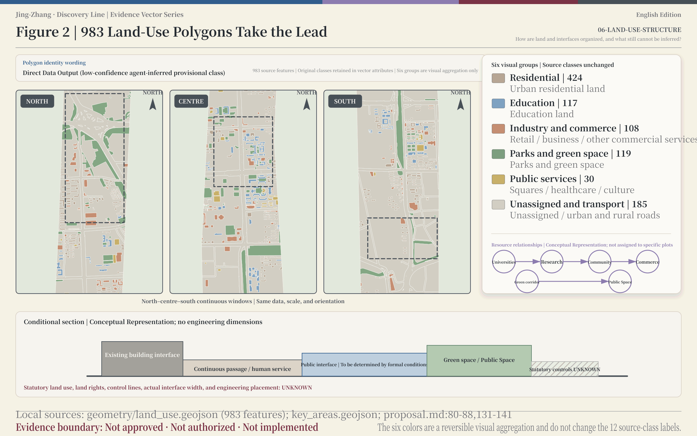
Detailed Design of Key Areas
The three key areas are still rough, temporary envelopes, so they support direction, not precise placement. Their announcement-level areas are approximately 192.1 hectares for Zhongzhiyuan, 104.3 hectares for AI Origin, and 72.0 hectares for Dazhongsi. Precise boundaries, internal parcels, property rights, fire safety, accessibility, municipal systems, ecology, and heritage conditions remain UNKNOWN / pending confirmation from formal materials. These temporary envelopes will be replaced when the formal boundary map arrives; they are not statutory controls or a basis for construction. The three areas, their internal objects, and their interface tables can then be updated in the same order and in the same place. Spatial data Depth
The conceptual positioning of Zhongzhiyuan’s “Retest Workshop” is to turn observations arriving from settings such as the Xiaoyue River into reviewable evidence. Spatially, it is recommended to accommodate reservable calibration benches, version and error explanations, a public explanation window, equipment isolation, and retirement interfaces. In transport terms, priority should be given to checking whether people, instruments, and public visitors can move without interfering with one another. After AI is taken offline, standard protocols, manual instruments, public results, and a space for retesting remain. Whether buildings are retained, repaired, or renovated must await a formal survey and professional assessment. The architectural team can begin by preparing a survey checklist for the four types of need: calibration, explanation, isolation, and retirement.
The conceptual positioning of AI Origin’s “Problem and Validation Foyer” is to make the question clear before validating it. Spatially, it is recommended to retain paper and pen, telephone, accompanied site walks, a human question-translation desk, and manual sampling classes. AI only classifies, flags conflicts, and explains errors; it does not automatically set priorities or collect students’ faces, voiceprints, or household trajectories. Public Space must accommodate people without apps, carers, and wheelchair users. Building volume, materials, interfaces, and specific locations remain pending confirmation from professional materials. The spatial team can begin by organizing the plan around five question-intake methods and three types of users. Standard
The conceptual positioning of Dazhongsi’s “First-Use and Exit Street Room” is to compare gains and losses in real life. A candidate unit brings together ground floors, kerbsides, park interfaces, and quiet community boundaries. It first compares fixed time windows, static parking spaces, and human guidance, and only then determines whether anonymous counting or withdrawable scheduling is needed. Limited first use becomes possible only after road-use authority, fire safety, accessibility, loading and unloading, the site, data, and operational responsibility have all been resolved; if responsibility has not been connected, the unit does not enter a trial. Professional teams can begin field checks with these seven conditions and write feasible time windows, restoration actions, and maintenance responsibility back to the candidate unit. Standard Depth
At Dazhongsi’s “First-Use and Exit Street Room,” the AI agent plaque wall, staffed window, and quickly removable intelligent terminals may be presented only as concepts; the responsible person, version, retirement date, terminal locations, authorization, and operating status are all UNKNOWN. This interface does not expand C02’s responsibilities: AI still only aggregates and compares the quiet, balanced, and vibrant options, while human inquiry, static wayfinding, a fixed activity schedule, and a no-activity control day remain in place.
Four-quadrant walking at Dazhongsi Station is expressed only as a concept through the continuity judgment in Figure 3 and roads, together with M01’s kerbside discipline. The station-area integration plan, precise interface in each quadrant, bicycle-parking locations, and implementation responsibility are all UNKNOWN and must be continued by rail, transport, and municipal professionals.
All three places continue their development through the same seven questions: What is the positioning? How is the space organized? How are buildings treated? How do transport and the Walking and Cycling Network remain continuous? How does Public Space preserve a non-AI path? Who maintains the AI-Enabled Scenario? How is it stopped and restored after failure? The current draft answers responsibilities and methods of judgment without presenting conceptual sections as detailed construction plans. These seven questions also form the shared development brief for the architectural, transport, landscape, and operations teams.
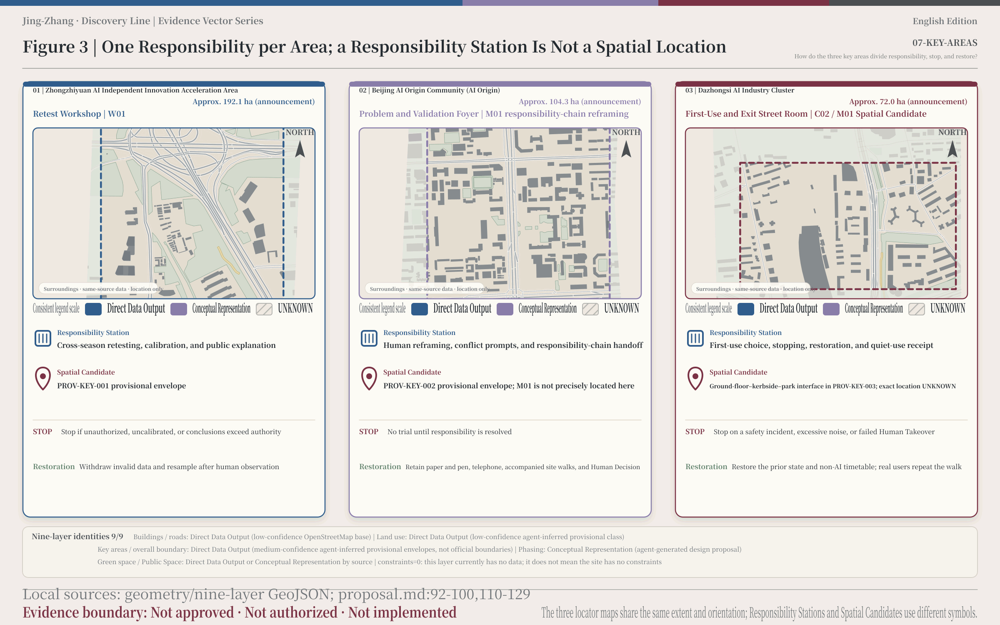
AI Innovation Ecosystem, Personas, and AI+ Scenarios
These personas are not marketing labels. They are a way to ask who the proposal might leave behind. For now, the list covers at least ten types that still need checking: older people who do not use smartphones, wheelchair users, carers and parents, night-shift couriers, street-front shopkeepers, out-of-town patients and accompanying carers, students and teachers, researchers, community or neighbourhood coordinators, and maintenance and operations staff. For each, we must show the day’s tasks, the burden of waiting or noise, the rights that cannot be traded away, and how the same task works without AI. These personas are not interview findings. Later interviews can add real tasks, differences, and groups we missed. One person’s day: [Synthetic disclosure] This is a synthetic account from a desktop simulation. The person is a synthetic persona. These personas are not interview findings. It does not come from any real interview or field event. M01 is not a physical card, ticket, sensor zone, automatic credential, or operating system. Desktop simulation | Not a field test | Does not represent a real project event. In the morning, the synthetic persona walks past a kerb contested by courier restocking, shopkeeper short stops, and resident movement. M01 records the question under one ID. At noon, M01 places options A, B, and C under that same ID, and AI compares only aggregated data: A is fixed loading windows, static parking spaces, and human guidance; B is lightweight, reversible, anonymous scheduling that does not track or evaluate individual couriers; C is professional kerbside development handed to duly empowered actors and professional teams. In the afternoon, M01 records the human decision by duly empowered actors and affected people to continue, modify, not adopt, or remove the option; the responsible entity remains unconfirmed. In the evening, the desktop simulation removes Human Takeover and returns NO-GO. The AI layer goes dark, the prior state and non-AI timetable return, and everyday tasks continue. M01 records the stop, restoration, and next retest. Responsible person: UNKNOWN. Stop authority: UNKNOWN | pending confirmation of the formal responsible entity. Retest date: UNKNOWN. Restoration cost: UNKNOWN. Current status: Not approved · Not authorized · Not implemented. Standard
All ten scenario cards are retained, and every one preserves a human route, authorization, Human Review, stopping, and restoration:
| ID | Scenario | What AI does—and only this | Non-AI baseline and boundary |
|---|---|---|---|
| G01 | Dual-entry question-translation desk for stated and unstated needs | Classify, deduplicate, and flag conflicts and sample gaps | Paper and pen, telephone, human coding, and joint meetings; AI does not set priorities |
| W01 | Xiaoyue River cross-season heat–water–access retest window | Quality prompts, preliminary anomaly screening, and model comparison | Manual instruments and fixed observation points; without real data, no water-quality or safety conclusions are published |
| R01 | Evidence Chain for breaks in road responsibility | Compare public materials and flag conflicts among responsibility fields | Formal inquiries, ledger checks, and joint field inspection; AI does not determine property rights |
| R02 | All-ages access work order–repeat walk | Compare the digital network with records from real accompanied walks | Human audit by users and accessibility professionals, with static wayfinding retained |
| M01 | Person–vehicle–machine kerbside timetable | Use aggregated data to compare the human baseline with withdrawable scheduling | Fixed loading windows, static parking spaces, and human guidance; couriers are not tracked |
| H01 | Pre-visit public-service chain for “one less trip” | Organize verified directories, accessible routes, and human handoffs | Telephone, printed directories, and human consultation; no diagnosis, queue allocation, or promises of appointment availability |
| H02 | Hospital micro-city process sandbox | Compare synthetic, non-clinical processes | Human tabletop simulation; no real patient data without hospital authorization |
| E01 | AI Origin one-kilometre urban science class | Prompt sampling quality and explain differences between manual and AI methods | Teacher-led activity, paper maps, and manual instruments; no student tracking or automated grading |
| C01 | Dazhongsi everyday-supply reconnaissance | Organize places, prices, time windows, and conflicting needs | Shopfront inventory and human interviews; no consumer profiling or behavioural manipulation |
| C02 | Four-period AI first-use pilot and quiet-use feedback | Aggregate and compare quiet, balanced, and vibrant options | Human inquiry, static wayfinding, a fixed activity schedule, and a no-activity control day. The ten cards then proceed into field evidence gathering and responsibility allocation under the same fields. |
W01, M01, and C02 are the three priority Testing and Validation Scenario candidates; “priority” does not mean authorized or validated. W01 compares manual instruments and fixed-point observation, AI quality prompts, and cross-season retesting. It stops—and non-qualifying data are withdrawn—if authorization is absent, calibration has not occurred, missing observations cannot be explained, or conclusions are published beyond the granted scope. C02 compares quiet, balanced, and vibrant options with a no-activity control day. AI only aggregates the gains and losses reported by shopkeepers, residents, night workers, and visitors; people make the final decision. Source
M01 is the only candidate whose chain of responsibility is developed in greatest depth. R02 first checks fire safety, accessibility, and responsibility; asset and operating responsibility then accept the case; a non-AI baseline is established; and three options are compared before people decide whether to enter a recommended, withdrawable trial lasting 30 to 90 days. Condition window: Within the 30-to-90-day withdrawable trial period, retesting must cover at least 1 retest in rainy weather, at least 1 during the morning peak, and at least 1 during the evening peak. The hypothesis to be confirmed or refuted by field measurements is that “kerbside conflicts intensify in rainy weather and during peak periods.” There is currently no field baseline; the corresponding values are UNKNOWN. A rejected request, unconfirmed responsibility, a cancelled trial, rising hazardous incidents, worse outcomes for the slowest group, failed human takeover, failure to restore the prior condition, or displacement of the problem to an adjacent segment all enter the failure denominator. After stopping, the prior condition and non-AI timetable are restored first, and real users repeat the walk. If responsibility cannot be explained, there is no trial. The repeat-walk result is written back to R02 and M01 as direct evidence for whether the next round should continue. Standard
The Discovery Passport ID is M01 across every file: responsible person UNKNOWN; stop authority UNKNOWN / pending confirmation of the formal responsible entity; retest date UNKNOWN; equivalent non-AI path fixed loading windows, static parking spaces, and human guidance; restoration action stop the trial, restore the prior condition and non-AI timetable, then have real users repeat the walk, with restoration cost UNKNOWN; applicability a withdrawable ground-floor–kerb–park interface unit in Dazhongsi to be confirmed by the client, while the precise location and any authorized time, segment, and user-group scope remain UNKNOWN and may not expand automatically; scientific return three-option comparison, risk-transfer, and restoration-clock evidence used to update the next sampling round, protocol, or tool version; public return a human decision by duly empowered actors and affected people to continue, modify, not adopt, or remove, with protocols, work orders, suspension records, and restoration receipts retained.
Each card should ultimately leave one of the following: a protocol, work order, repair record, open data dictionary, service standard, or explicit “do not adopt” conclusion. It must state the maintainer, version, scope of application, review date, and retirement method. Attendance, webpage displays, or demonstration videos alone do not count as completed validation. The scenario operator, location, baseline value, and retest time remain UNKNOWN / pending confirmation from formal materials. Once formal information is available, the operations team can complete each item by card ID and schedule its review.
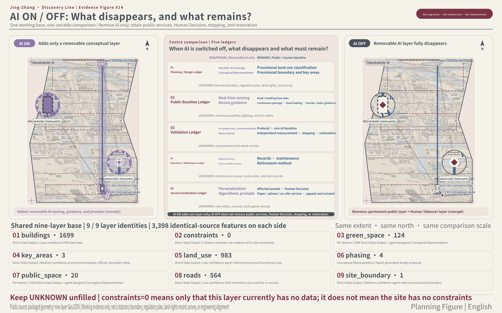
Land Use, Building Scale, and Retain-Renovate-Demolish Strategy
For land use, the order is simple: check what exists, then discuss mixed use, and only then decide what to retain, alter, or remove. Zhongzhiyuan must make room for equipment checks, research, shared instruments, and public explanation. AI Origin needs education, community service, staffed inquiry, and a quiet interface for controlled testing. Dazhongsi needs ground-floor shops, kerbs, Public Space, and community life to share time as well as space. Zhongguancun Technology Services Wing and Xiaoyue River Scenario Enablement Wing are links between services and scenarios, not new statutory land-use categories. When formal land-use materials arrive, the planning team can test each parcel against the needs of the three stations and two wings. Standard Depth
Building scale cannot be used in the current draft to derive Floor Area Ratio, height, Building Coverage Ratio, setbacks, or additional building volume. The existing buildings layer provides only a conservative subset of OSM Building Footprints. The formal task materials do not yet contain enough data to resolve parcel-level Regulatory Detailed Planning, land rights, surveying, legal status, or existing use. Professional teams should inspect each building for structural safety, historical and cultural value, the necessity of public service, fitness for adaptation, and residents’ wishes, and then formulate Conceptual Recommendations to retain, repair, renovate, renew, or demolish it. Spatial data Depth
The Demolish–Renovate–Retain Strategy does not exist to manufacture a futuristic appearance. Buildings able to accommodate human services, static wayfinding, calibration, or withdrawable trials through light-touch renewal should be considered first for retention and reuse. Breaks that impede fire safety, accessibility, or basic public services should first undergo a responsibility check and minimum repair. Major renovation or demolition is discussed only when supported by formal assessment and statutory procedures. Historic buildings, heritage sites, and protection areas follow formal inventories; this draft does not invent dates, grades of significance, or protection lines. On this basis, professional teams first complete building-by-building checks, then write recommendations to retain, repair, renovate, renew, or demolish back to the object list. Depth
The land_use, buildings, and constraints layers must be read together. The first contains provisional functional relationships; the second cannot establish use or land rights; the third is empty because formal control conditions are still missing. Parcel-level sources for existing conditions, area algorithms, treatment recommendations, responsible actors, statutory conditions, and uncertainty must still be completed item by item in the structured data. The current draft provides rules for judgment and does not present Conceptual Recommendations as control metrics or engineering cross-sections. Once the three layers are aligned through the same object IDs, new materials can directly trigger a review of treatment and metrics for the corresponding parcel. Spatial data Spatial data
Building massing and Urban Character first uphold three principles: clear public interfaces, maintainability, and limited intrusion. New components are recommended to be restrained, durable, and removable, avoiding intense light, noise, and large screens. Engineering dimensions, materials, details, and actual placement are all UNKNOWN / pending confirmation from formal materials. Architectural and landscape teams can use these three principles to screen options first and add dimensions, materials, and details when engineering materials become available. Depth
Transport, Rail, Municipal Infrastructure, and Public Services
The transport question is whether a person can finish the day’s tasks without the route breaking. Along the Jing-Zhang Railway Heritage Park route, we check walking, cycling, wheelchair movement, rail transfers, and use across four times of day. East–west links connect universities, communities, businesses, and both sides of the park. Each interface is marked for checking—where it is, what it connects, and who must confirm it—without assuming a wall will be removed, a bridge or tunnel built, or a road widened. The current road geometry comes from the temporary working map (the provisional working surface) and conservative OSM public-map material; it organizes transfers and continuity judgments only. Once formal materials for an interface arrive, the segment can be replaced in place and only its continuity conclusion needs to be recalculated. Spatial data Depth
R02 replaces “a single point looks compliant” with a repeat walk through a complete task. Older people, wheelchair users, carers, and everyday users travel from origin to destination and record whether ramps, surfaces, seats, signs, kerbs, transfers, and human inquiry remain continuous. M01’s kerbside unit first resolves road-use authority, fire safety, accessibility, loading and unloading, and maintenance responsibility, then compares fixed loading windows, static parking spaces, and human guidance. Individual trajectories must not be used to evaluate couriers. Once the repeat-walk form and kerbside conditions form are combined, the transport team can directly locate breaks that need repair, further evidence, or retention of the human option.
In the R02 all-ages access work order, the level difference at the crossing between the heritage track and park path, together with a removable crossing mat, may be treated as a conceptual break pending verification; the precise location, level difference, safety dimensions, authorization, and field measurements are all UNKNOWN.
Xiaoyue River Scenario Enablement Wing is a public experience route pending formal confirmation, not a showcase corridor filled with sensors. Under conditions such as high temperatures, after rainfall, and ordinary days, W01 conducts human observation, fixed-point sampling, and manual/AI comparison before calibration at Zhongzhiyuan. In E01, teachers may lead students in an urban science class, but faces, voiceprints, household trajectories, and identifiable continuous routes are not collected. Water, meteorological, and education teams can continue through the three respective interfaces of sampling protocol, calibration arrangement, and curriculum organization.
At this stage, municipal systems and New Infrastructure begin with data conditions: drainage districts and waterlogging records, raw water and meteorological data, ownership of utility lines and maintenance access, electricity and communications capacity, fire-safety conditions, sanitation, and responsibility for equipment maintenance. Without real water or meteorological data, no heat map is drawn and no water-quality or safety conclusion is published. Without a capacity check, the proposal does not commit to computing power, charging or battery-swap facilities, equipment quantities, or connection timing. Once materials are available, the municipal team can determine the proposal item by item across six groups: drainage, water and meteorology, utility lines, electricity and communications, fire safety, and operations and maintenance. Depth
The integration of edge computing with traditional facilities is expressed only as a concept through the cable trench, utility corridor, and removable-terminal logic in the V08 section. Capacity, locations, ownership, connection conditions, and the implementation path are all UNKNOWN and must be continued by municipal, energy, and information-and-communications professionals.
Public-service facilities retain staffed windows, telephones, printed directories, static wayfinding, seating, and accessible routes at the same time. H01 provides only pre-visit public information and a handoff to a person, without promising appointment availability. H02 remains a synthetic, non-clinical tabletop sandbox until the hospital gives formal authorization. When technology fails, the first question is whether human takeover can restore the basic task, rather than simply whether the system is online again. The public-services team can therefore check the digital process and human route together and use both “one less trip” and “someone can take over” as shared acceptance criteria.
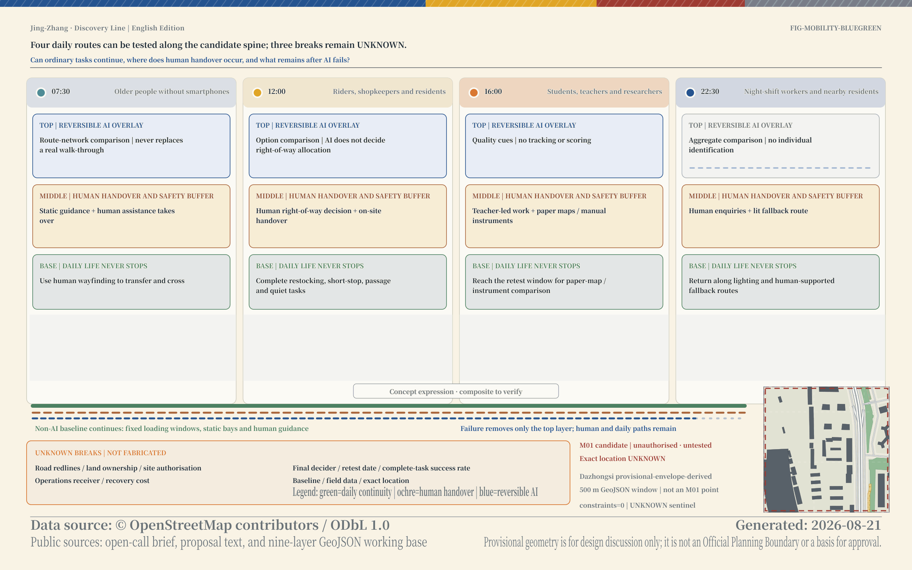
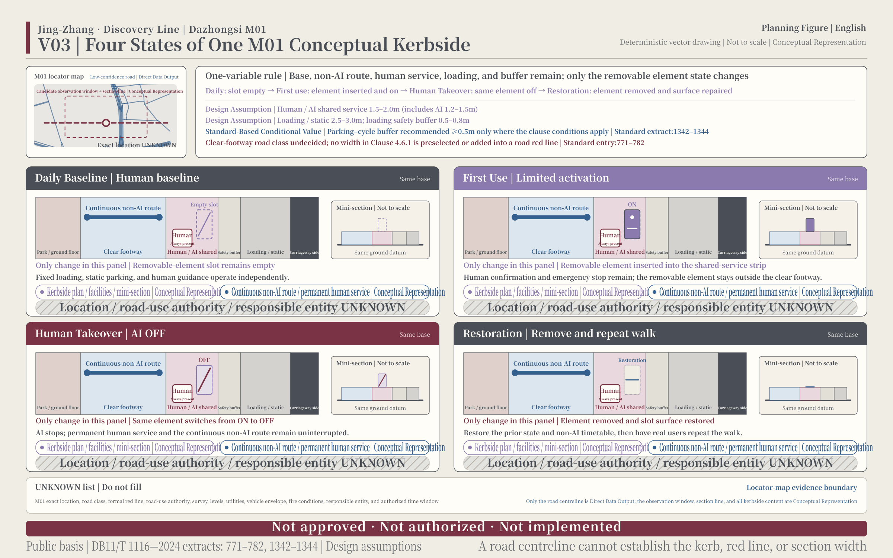
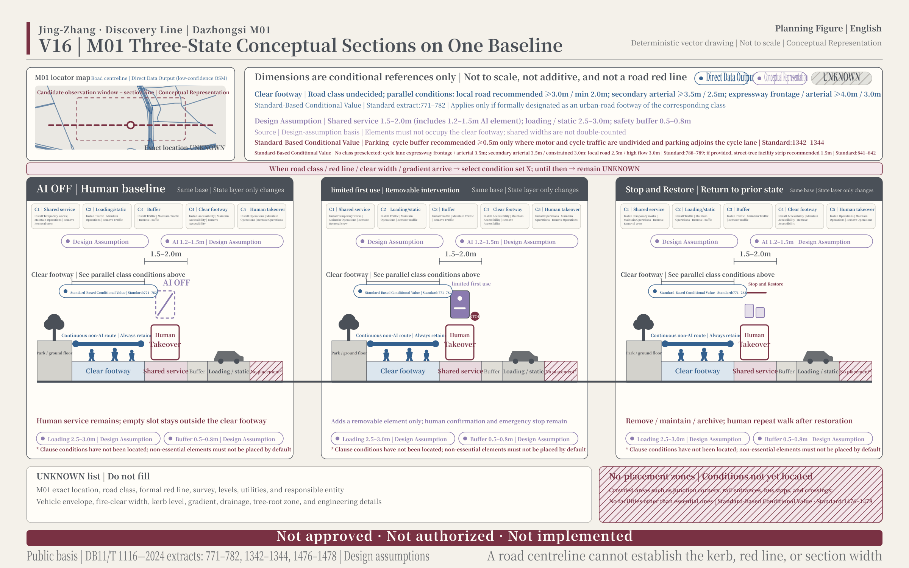
Blue-Green Network, Public Space, and Urban Character
Jing-Zhang Railway Heritage Park and the Public Space around it form the main north–south route and the everyday base shared by two public tasks: coping with heat, rain, and movement, and keeping daily use continuous for people of all ages. North–south checks ask whether walking and cycling remain continuous, whether all four times of day work, and where extreme weather creates a break. East–west links begin with interfaces that still need confirmation on the university, community, business, and park sides; ‘linking’ does not promise that a wall will be removed or a bridge built. If AI goes offline, fixed facilities, human help, and basic public services must still work. Depth
V09 is only a conceptual representation of “future park × century-old heritage” from the same viewpoint: the heritage-track axis, photovoltaic shade, low-level sensor lighting, maintenance robots, an AR historical viewfinder, a resurvey information post, and an accessible crossing do not represent built works. The location, quantity, responsible actor, operating data, and implementation status of every facility are UNKNOWN.
The landmark nodes respond conceptually through three types of location—the south end, the north end, and the area crossing the ring road—with V15 serving only as an image of the southern node. The formal location, scale, engineering conditions, and implementation status of each node are UNKNOWN.
Sports and innovation exchange are expressed only as a conceptual facility program through the fitness corner and long table under the gallery in V09. Their locations, quantities, operator, and results of use are UNKNOWN.
The current green space and Public Space derive from deduplicated unions of a conservative subset of OSM-mapped existing features and the B area-wide framework conceptual intervention; C first-phase nodes enter only the phasing layer and are not added again to B. These two layers are suitable for explaining continuity and intervention relationships within the current design model. They do not represent a complete inventory of actual existing conditions, a formal green line, Public Space land rights, or a scheme endorsed through statutory procedures. Once formal layers are available, the landscape team can replace the base figures while retaining the existing division of roles between the B framework and C nodes, then recalculate continuity and area relationships. Spatial data Spatial data
The three AI pilgrimage landmarks are public interfaces of responsibility that can be used in daily life. AI Origin’s “Problem Stele” discloses the question, affected people, evidence gaps, and reasons for acceptance or return. Zhongzhiyuan’s “Retest Platform” discloses calibration, independent reproduction, failure, revision, and retirement status. Dazhongsi’s “First-Use Milestone” discloses the scope of application, non-AI choice, maintainer, review date, and method of deactivation. The three stations carry the three landmarks; a fourth is not created. Their value comes from traceable responsibility, not mass, lighting, or spectacular form. During design development, the spaces and information interfaces of the three landmarks are organized around the everyday actions of submission, retesting, and first use, respectively.
The cultural narrative has three layers: the Jing-Zhang engineering spirit means doing things precisely, expressed through measurement, calibration, standards, review, and maintenance; Zhongguancun’s open innovation means allowing trial and error and enabling open collaboration, expressed through questions, experiments, failures, and conversion; AI public responsibility means making technology answerable to people, expressed through evidence, rights, transparency, appeal, correction, and exit. The three layers connect through “raise a question—form a hypothesis—retest independently—conduct urban first use—return evidence to the next round of science and public decision-making,” rather than through a collage of nostalgic decoration and science-fiction surfaces. Exhibitions, wayfinding, and public activities can all allocate content along this chain of actions. Source
Tsinghuayuan Railway Station is expressed only as a conceptual cultural program linking the historic station building, public questions, and retest archives; this does not represent authorization to use the site or its content. Beijing Film Academy resources are expressed only as a conceptual cultural program linking image collection, urban memory, and public review; this does not represent authorization from any institution or for any work or material.
The honours display is not a permanent awards wall that records only successes. It shows contribution, reproduction, maintenance, correction, failure, retirement, evidence status, responsible person, and expiry date together. Public Space components retain only six conceptual directions: a question-submission desk, evidence-responsibility sign, no-app wayfinding, calibration interface box, low-speed trial boundary kit, and reversible shaded rest unit. Each must provide accessibility and an offline fallback, a maintainer, an inspection cycle, stopping conditions, and a removal method.
Renewal Projects, Implementation Policy, and Phasing
Before discussing a construction date, every item goes into five ledgers and through six gates. The five ledgers cover planning and design, public foundations, scenario validation, operations and maintenance, and social coordination. The six gates cover data and boundaries, problem value, scientific protocol, urban first use, projects and funding, and construction and operations. A project moves only after all six gates are satisfied, and every transition leaves a named responsibility, the supporting materials, and a review record. Plain-language gate phrases: Gate One accepts only two things: formal materials and a responsible person. Gate Two asks first: Does this serve the public? Where is the boundary? Who is affected? Who is responsible? At Gate Three, turn the proposal into a protocol, check it on the desktop, then retest it independently. Gate Four: only an authorized proposal may enter a limited trial. No authorization means no trial. Gate Five: if the site, funding, or construction commitment is unresolved, stop there. Gate Six: formal location, operations and maintenance, rights clearance, and legal conditions first; construction comes after. Source
The project list is organized by conditions rather than presenting Conceptual Recommendations as scheduled works:
| Project cluster | Conceptual object | Prerequisite | Acceptable outcome |
|---|---|---|---|
| Public-spine continuity task | R02 repeat walk, static wayfinding, and minimum repair | Real access baseline, responsibility, and site confirmation | Repair, gather further evidence, stop, or retain the non-AI option |
| Xiaoyue River retesting | W01 observation points, sampling protocol, and Zhongzhiyuan retest interface | Water and meteorological materials, calibration, site, and participation authorization | Retest, withdraw non-qualifying data, or do not adopt |
| Dazhongsi kerbside | R02→M01 withdrawable kerbside unit | Road-use authority, fire safety, accessibility, loading and unloading, and restoration responsibility | Adopt, modify, stop, or restore the prior condition |
| Four-period activities | Three C02 options and a no-activity control day | Human choice by shopkeepers, residents, night workers, and visitors | Select, reduce, suspend, or do not hold |
| Responsibility interfaces at the three stations | Problem Stele, Retest Platform, and First-Use Milestone | Formal locations, operations and maintenance, rights clearance, and statutory conditions | Install in phases, adjust, or do not install. These five project clusters then enter management through the five ledgers. |
Phasing expresses only the sequence of conditions. Step one obtains formal materials and responsibility and completes the field baseline and non-AI options. Step two develops protocols, tabletop checks, and independent retesting. Step three may enter limited first use only after authorization conditions are met. Step four has people decide whether to adopt, modify, stop, or restore the prior condition. M01’s 30-to-90-day period is only a recommended window for a withdrawable trial, not an authorization, construction, or building schedule. The project team can use the four steps to prepare material packages, responsible parties, and transition records. Spatial data Depth
Long-term operations use one four-season cycle: Urban Question Season—Calibration and Retesting Season—First-Use and Access Season—Evidence Return Season. The Question Season receives real problems and preliminarily screens public value, boundaries, affected people, and responsibility. The Retesting Season discloses protocols, calibration, and independent reproduction. The First-Use Season admits only projects for which safety, privacy, accessibility, human fallback, an equivalent non-AI path, and site authorization have all been resolved. The Return Season reviews success, failure, complaints, maintenance, removal, and retirement, then decides whether to continue research, enter procurement, reduce scope, stop, or retire.
The developer community is recommended to be operated by a later-selected operator in collaboration with university and campus partners; the current responsible entity is UNKNOWN / pending confirmation from formal materials. Admission checks intellectual property, data rights, safety, and the public interest together. Repair or reproduction activities must leave protocols, tools, repair records, contributor lists, maintenance responsibility, and exit responsibility. The public experience route allows people without apps to submit questions, understand status, find human services, and locate exit methods. International communication explains only the question, validation status, public rights, and limits of applicability. Once the operator is identified, it can configure teams directly around five task groups: admission, repair, reproduction, public experience, and communication. Depth
agent.6 | Long-Term Operations Handover Matrix
agent.6 uses the existing four-season cycle as its operating clock: City Questions Season receives problems; Calibration and Retest Season checks protocols; First-Use Open Season admits only candidates that meet the conditions; and Evidence Return Season writes success, failure, complaints, maintenance, removal, and retirement back into the record. Each activity keeps the same Discovery Passport ID, enters the five ledgers, passes the relevant six gates, and records failure in the retest ledger; activity scale is not success by itself. Every role and cadence below is proposed and unauthorized; none constitutes a staffing, procurement, funding, or scheduling arrangement.
| Item | Proposed role | Cadence | Input | Output | Admission conditions | Exit and stop | Success / failure measures |
|---|---|---|---|---|---|---|---|
| Annual activity system | Proposed, unauthorized: operations coordination role + three-station duty roles | One cycle per season; one year-end retest-ledger review | Five-ledger candidate list, Discovery Passports, prior-cycle failures | Draft annual activity calendar, three-station duty sheet, four-season receipt pack | The candidate passes the first three of the six gates; a draft public calendar and human fallback are ready | Cancel the item and retain a “not adopt” record if responsibility, authorization, or an exit method is missing | Success: every season has inputs, outputs, and receipts; failure: an item advances without a receipt or its gap misses the next cycle |
| Activity brand and communication visuals | Proposed, unauthorized: brand editor role + rights and accessibility review roles | One annual base system; update each season when status changes | Proposal name, current-season evidence status, rights list, bilingual terminology | Bilingual visual-use pack, captions and alt text, version-difference list | Trademark, font, image rights, and status warnings are checkable; candidates are not presented as implemented | Stop using the version if rights are unclear, status labels are missing, or translation changes responsibility boundaries | Success: every candidate asset has version, rights, and status; failure: a wrong version circulates or warnings are unreadable |
| Developer community | Proposed, unauthorized: community operations role + code / data maintenance roles | One protocol clinic per month; one reproduction session per season | Public problem briefs, protocols, sandbox data, tool versions, failure list | Issue list, reproducible steps, contributor and retirement lists, retest records | Intellectual property, data rights, safety, and public-interest checks pass; a maintenance role is reachable | Freeze the contribution if rights are unclear, a safety issue appears, maintenance is absent, or reproduction fails | Success: every contribution has a maintainer, version, and reproduction result; failure: orphaned assets or unlogged changes |
| Scenario access | Proposed, unauthorized: scenario-interface role + safety / accessibility / data review roles | One candidate window per season; case-by-case review | Scenario card, non-AI baseline, site authorization, human-takeover and restoration plans | Admission / rejection receipt and D03 / D04 / D05 / D06 handoff pack | The first four of the six gates pass; authorization, affected-person participation, human fallback, and restoration responsibility are ready | Stop if hazards rise, the slowest group worsens, data exceeds scope, or human takeover or restoration fails | Success: every admitted item has stop and restoration receipts; failure: unauthorized expansion or incomplete restoration |
| Public experience and landmark operations | Proposed, unauthorized: public-service role + accessibility review role + facility-maintenance role | Weekly human inspection during a candidate open period; one no-app repeat walk per month | Static wayfinding, paper / phone entry, three-station status, complaints and repair tickets | Experience-route checklist, repair work order, complaint closure or “not adopt” record | Fire safety, accessibility, human service, and an equivalent non-AI path work; facility status is readable | Close the affected experience if any route breaks, the human window is absent, or facility responsibility has no recipient | Success: a no-app task can be completed and complaints have receipts; failure: the slowest group's task is interrupted |
| International communication | Proposed, unauthorized: bilingual editor role + scientific and compliance review roles | One status brief per season; update when evidence status changes | Public Discovery Passport fields, failure boundaries, rights-cleared figures, bilingual terminology | Bilingual case brief, version-difference list, human contact entry | No personal data; evidence status, rights, and applicability boundaries align across languages | Withdraw the candidate draft if responsibility is mistranslated, status drifts, rights are unclear, or a proposal becomes a commitment | Success: bilingual status and boundaries align; failure: an old version circulates or a key warning is missing |
| Attraction and conversion | Proposed, unauthorized: industry-service role + human due-diligence / empowered-decision roles | Route each case after D06; one pipeline review per season | D04 / D06, five-ledger service needs, legal and funding material (UNKNOWN until provided) | Routing receipt for continued research / procurement preparation / not adopt / return for evidence | The fifth of the six gates passes; budget, procurement authority, conflicts of interest, and public results are checkable | Stop conversion and return for evidence if funding, procurement, site, responsibility, or public results are unclear | Success: every candidate has a route, responsible role, and next evidence step; failure: interest is treated as a signed deal or a decision lacks authority |
| Item | Maintenance-responsibility status | Funding-line status |
|---|---|---|
| Annual activity system | UNKNOWN — pending confirmation of operations coordination and three-station duty responsibility | UNKNOWN — pending five-ledger lines for activities, sites, safety, and review |
| Activity brand and communication visuals | UNKNOWN — pending responsibility for brand versions, rights review, and withdrawal | UNKNOWN — pending lines for design, translation, accessibility, and rights clearance |
| Developer community | UNKNOWN — pending community operations, repository maintenance, and security response | UNKNOWN — pending lines for sites, tools, reproduction, and maintenance |
| Scenario access | UNKNOWN — pending scenario intake, stop, removal, and restoration responsibility | UNKNOWN — pending lines for testing, insurance, maintenance, removal, and restoration |
| Public experience and landmark operations | UNKNOWN — pending human service, inspection, repair, and accessible repeat-walk responsibility | UNKNOWN — pending lines for service, wayfinding, inspection, repair, and restoration |
| International communication | UNKNOWN — pending bilingual editing, scientific review, rights, and withdrawal responsibility | UNKNOWN — pending lines for translation, design, rights clearance, and version maintenance |
| Attraction and conversion | UNKNOWN — pending industry service, due diligence, procurement interface, and exit responsibility | UNKNOWN — budget and funding source not provided; it cannot be written as an attraction or investment commitment |
Note: both tables define proposed agent.6 interfaces only; nothing is signed, authorized, or scheduled. Duly empowered actors must confirm maintenance responsibility and funding lines within the five ledgers and six gates; every unconfirmed item remains UNKNOWN.
Metrics, Area Recalculation, and Compliance Matrix
The three known values describe only the current provisional design model. Confidence is low, and they are not statutory or existing-condition metrics. For example, the Overall Design Area working surface measures 11,412,825.386 square metres, using the formula area(union(site_boundary)) in EPSG:4548, with the provisional base surface PROV-SITE-001 as its source. This is not an Official Planning Boundary and must be recalculated when a formal boundary replaces it; using the same formula and coordinate reference system for that recalculation makes the difference between the two results directly traceable. Metric Spatial data The complete record of that desktop exercise follows: The time we ran it on the desktop: The Time We Ran It on the Desktop Desktop simulation | Not a field test | Does not represent a real project event Status: Current status: Not approved · Not authorized · Not implemented. 30 three-state receipts: The 10 cards produced 30 receipts across 3 states, merged into one JSON array. Each receipt records the input summary, six-gate decision, evidence path, and synthetic/non-field flag. The 10 human-baseline cases and 10 protocol-comparison cases were each held because conditions were incomplete; all 10/10 over-boundary advancement cases were refused by the rules. Negative injections: 14 negative injections produced 14 injections / 0 leaks, covering overreach, a missing non-AI route, failed withdrawal, missing responsibility, and M01 drift. This result only proves that no leak occurred within the desktop simulation; it does not prove anything in the field. One closed M01 round: M01 used Codex's own model for 1 real generation round. The prompt, all 3 candidates, and all 3 adjudications were retained, with no round deleted and no outcome-based selection. The exact service identity and seed were unavailable and recorded as such. None of the 3 candidates crossed the authorization, resource, or operating conditions. Field count: 0. Whole-line downgrade: If any card fails retesting, the passport level for the whole line drops back one level; the weakest card may not be patched in isolation. This record is not a real retest. Authority boundary: Zhongzhiyuan handles retesting; AI Origin clarifies the question before validation; Dazhongsi may conduct limited first use only after authorization, with exit available at any time. M01 responsibility chain: M01 is the only candidate whose responsibility chain is developed in greatest depth. Responsible person: UNKNOWN. Stop authority: UNKNOWN | pending confirmation of the formal responsible entity. Retest date: UNKNOWN. Restoration cost: UNKNOWN. Non-AI route and restoration: The equivalent non-AI path uses fixed loading windows, static parking spaces, and human guidance; individual couriers are not tracked or evaluated. If the AI layer fails, it goes dark, the prior state and non-AI timetable return, and everyday tasks continue. Double count: The double count is fixed: tabletop simulation 30/30; real retests 0; field runs 0. Summary:
| Boundary | Desktop simulation | Not a field test | Does not represent a real project event | Retain verbatim |
|---|---|---|
| Desktop receipts | 30/30 | 10 cards, 3 states each |
| Negative injections | 14 injections / 0 leaks | Zero leaks |
| M01 capture | 1 round; 3 candidates; 3 adjudications | All retained |
| Real retests | 0 | Not performed |
| Field runs | 0 | Not performed |
| Current status | Not approved · Not authorized · Not implemented | Retain verbatim |
| Responsible person | UNKNOWN | Pending formal confirmation |
| Stop authority | UNKNOWN | Pending formal confirmation |
| Retest date | UNKNOWN | |
| Restoration cost | UNKNOWN |
Alongside—but separately named from and never combined with—the 30-receipt three-state ledger, the v0.2 package includes a second offline task-exercise ledger. Its method is a deterministic protocol walkthrough: the readings for 24 tasks come directly from the task table and can be recomputed from the same fields. Metric The ledger records 20 items that met the expected determination—including 6 refusal-class tasks correctly stopped by the rules—and 4 items that did not, for 20/24. Metric Dispatch-instruction format was valid for 23/24, while the remaining illegal instruction was correctly stopped by the data-and-boundary gate. Metric Three tasks exceeded their energy budgets. Metric Audit completeness was 21/24. Metric Its six gates map in order to the proposal's data and boundaries, problem value, scientific protocol, urban first use, projects and funding, and construction and operations gates. These readings come from an offline desktop walkthrough, never entered field operation, and do not demonstrate real project outcomes. The preceding three-state receipt ledger and double-count lock belong to the same desktop exercise; their underlying records remain archived in the project workspace, were not included in the package, and cannot be recomputed from package contents. This exercise ledger can instead be recomputed field by field from simulation.json; it is neither counted in that lock nor added to it.
See report/narrative.md for the runtime evidence index; it records only the functional names and SHA-256 fingerprints of the source files, which remain archived in the project workspace and have not been copied into this package.
The green-space ratio is 0.074603, using area(union(green_space)) / area(union(site_boundary)). The Public Space ratio is 0.004293, using area(union(public_space)) / area(union(site_boundary)). For both numerators, the conservative subset of OSM-mapped existing features and the B area-wide framework conceptual intervention are first deduplicated and then unioned; C first-phase nodes are not counted again. If any formal green-space, Public Space, or boundary polygon replaces the current one, both ratios must be recalculated. Metric Spatial data Metric
The green-space ratio is used to check the relationship between Blue-Green continuity and support for talent’s everyday life in the current model. The Public Space ratio is used to check spatial provision for innovative interaction, no-app services, and the three responsibility interfaces. Together, the two values point to spatial breaks requiring further measurement; when formal materials arrive, judgments can be updated through the same layers and formulas. Spatial data
Scenario metrics begin with real denominators. Access measures success across a complete task, time taken by the slowest group, and breaks that remain after the repeat walk. The kerbside compares hazardous incidents, waiting, accessibility, and noise through aggregated data. Public services measure avoided steps, whether human takeover succeeds, and whether complaints are resolved. Environmental work measures the completeness of sampling protocols, instrument calibration, missing observations, and cross-season reproduction. Every metric includes refusals, cancellations, failed human takeover, failure to restore after removal, and displacement of problems to adjacent segments in its denominator.
The Discovery Passport records at least the person responsible for the question, spatial object, evidence level, source scale, non-AI baseline, falsifiable hypothesis, protocol and tool version, data rights and quality, independent reproduction, scientific return, public decision, trade-off feedback, responsibility lookup, and exit. The evidence ladder contains only L0–L5: from policy agenda, city/district priors, and district-level signals to corridor evidence, field supplementation, reversible trials, and retesting. A directional judgment is upgraded to an object-level validation conclusion only after reaching the corresponding evidence level; professional teams can begin further sampling from the next evidence level stated in the passport. Depth
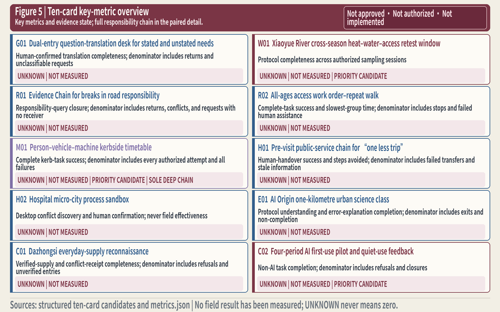
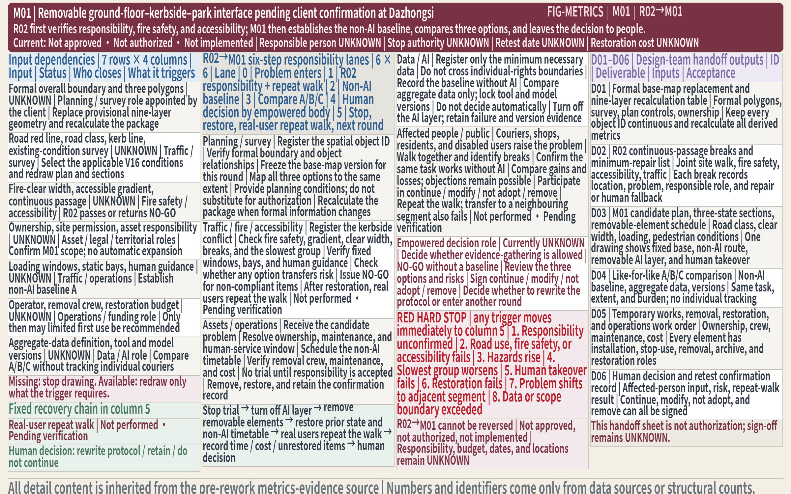
Risk, Copyright, and Compliance
We have to prevent a few factual errors: treating a temporary boundary as an Official Planning Boundary; turning an aggregated request into evidence for one street; counting another project’s or department’s money as this proposal’s budget; presenting a recommended entity as an authorized operator; presenting a synthetic persona as an interviewee; presenting a generated image as a site image or formal planning drawing; or presenting an activity or pilot candidate as scheduled work. If any of these happens, the text, figures, and machine-readable files return to a more conservative evidence status and are labelled again. Depth We must also avoid reading “complete” at the machine gate as if professional design development were finished—the former only means that the evidence chain satisfies the current gate; professional spatial development still awaits continuation by a qualified team.
The general limits of applicability for the preceding cases are consolidated here. The eight cases answer only “what to borrow, where to place it, and what must not be copied”; they do not endorse Jing-Zhang. For Punggol Digital District, a mature urban area does not copy the area-wide sensing and centralized backend of a newly built district. For Seoul AI Hub / Yangjae, an industrial ecosystem cannot replace validation of residents’ lives and does not imply that capital or institutions have already joined. For Toyota Woven City, a corporate-led, closed, newly built prototype city cannot represent public governance in a mature urban area. For Detroit–Ann Arbor, autonomous driving or corporate development does not become Jing-Zhang’s main line, and the two projects are not written as the same entity. For Curiosity Lab at Peachtree Corners, large-scale sensing, a control room, road length, awards, and the autonomous-driving main line are not transferred. For Testbed Helsinki, another city’s procurement, data, and organizational systems cannot be copied, and a short trial cannot establish scientific validity. For Berkeley A-Lab, a closed laboratory does not contain residents’ rights, public authorization, or urban responsibility. For Chicago Array of Things, a large sensing network is not replicated, avoiding the surveillance of Public Space and mission drift. These limits correspond one-to-one with the eight positive adaptation actions in the preceding table and can be checked by case name.
The general qualifications for overall design, transport, and implementation are also stated together once in this chapter. No related project, policy direction, or departmental funding automatically becomes a site, budget, or construction commitment for this proposal. Road geometry comes from provisional and conservative OSM base material and cannot be treated as a precise control line. Implementation does not begin by assigning construction dates; it first places objects into the five ledgers and through the six gates. If any gate is unmet, the project does not advance automatically. This working method also does not replace statutory planning, construction, procurement, ethics, or data procedures. The corresponding chapters now explain how professional teams can continue the work; this chapter preserves the complete conditions and limits.
The limits on metric use are consolidated as follows. The design meanings of these figures are also limited: the green-space ratio only helps check the relationship between Blue-Green continuity and support for talent’s everyday life in the current model, while the Public Space ratio only helps check spatial provision for innovative interaction, no-app services, and the three responsibility interfaces. OSM existing features are a conservative subset, so neither metric directly describes complete existing conditions. Without formal land-rights and statutory-control materials, neither ratio can be used to infer buildable area. Scenario metrics do not fill in attractive numerators. Kerbside metrics consider hazardous incidents, waiting, accessibility, and noise without tracking individual couriers. A directional judgment is not presented as an object-level validation conclusion until it reaches the corresponding evidence level. On this basis, the metrics team retains the original formulas, denominators, and evidence levels and completes a traceable recalculation when formal materials arrive.
All spatial, operational, branding, and policy statements remain Conceptual Recommendations. The current proposal does not decide planning, healthcare, education, procurement, financing, investment attraction, or public trade-offs in place of duly empowered actors. Responsibilities, funding, land rights, dimensions, capacity, procedures, and operational matters unsupported by formal materials are all marked UNKNOWN / pending confirmation from formal materials. The provisional boundary, three rough key areas, OSM base material, and conceptual interventions remain identified by status throughout the text and figures.
Privacy and rights are jointly governed by minimum data collection, Human Review, informed participation and appeal, an equivalent non-AI path, and deletion or retirement at expiry. If a trial increases hazardous incidents, obstructs fire safety or accessibility, worsens waiting, crosses night-time noise limits, requires personal trajectories, is used for platform labour evaluation, or lacks maintenance responsibility, it stops immediately or returns to the non-AI option. People make the final decision; AI cannot turn aggregated results into an automatic decision. Standard Standard
The twelve scene images, the historical-engineering concept image, and the atmospheric underlay in the mobility/blue-green figures were produced by the submission team with OpenAI's built-in image-generation tool. Each package path, generation batch or confirmable time window, derivative relationship, and SHA-256 is registered in sources.json. Under the OpenAI Terms of Use effective 1 January 2026, the submitter owns the Output as between the submitter and OpenAI. Public display also follows the Sharing & Publication Policy updated 14 November 2022, with per-image human review, AI-generation disclosure, and final responsibility retained by the submitter. The project logo has been replaced with a project-authored vector that contains no Lovart-converted paths. The HTML, figures, and four PDFs use Source Han Serif/Sans [version and filenames] obtained from an official adobe-fonts release and used, embedded, and redistributed under the SIL Open Font License 1.1, with the full licence included in the package. These grounds do not establish uniqueness, automatic copyright protection, or freedom from third-party claims. Independent legal review remains required before formal brand adoption, registration, or commercial promotion.
“Referenced” in the professional standards matrix and design-depth matrix means only that the body provides an entry point for the response. It does not mean that professional materials are complete or that the design depth has been achieved. In particular, formal documents on architectural design depth, formal control conditions, ecology and heritage, existing buildings, land rights, funding, and operating responsibility must still be closed through later formal materials. Standard
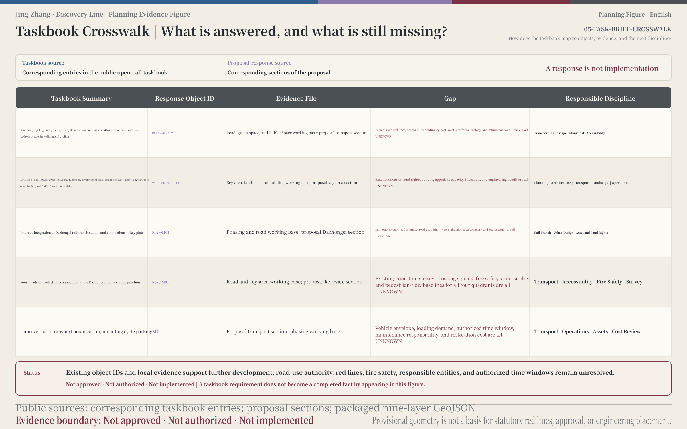
Official Open Call Task-by-Task Response Index
This table is only an index of responses and an explicit account of gaps. It does not use a concept-level answer to replace formal planning, professional materials, authorization, or field measurement. The announcement scale refers to extracted.txt lines 55–65 and 71–75. The status column uses only “Answered,” “Concept-level answer,” and “UNKNOWN + continuation condition.”
| Official item (extracted.txt line) | Our response location (chapter / figure / card) | Status |
|---|---|---|
| Industry–space integration, project list, implementation policy, and regulatory-plan depth (55) | “Overall Design Area: Urban Renewal and Regulatory-Plan-Level Urban Design” and “Renewal Projects, Implementation Policy, and Phasing”; continuation: planning, industry, and implementation professionals | UNKNOWN + continuation condition |
| AI industry goals, indicators, innovation network, “1+X+1,” functional proportions, and spatial organization (57) | “Coordinated Research Area: Industry and Future City Research” and the “1+X+1” direction statement; continuation: industrial-economics and planning professionals | UNKNOWN + continuation condition |
| Renewal framework, jobs–housing–commerce–services balance, industrial and building scale, low-efficiency spaces on both sides, and implementation drawings (59) | “Overall Design Area,” “Land Use, Building Scale, and Retain-Renovate-Demolish Strategy,” and “Renewal Projects, Implementation Policy, and Phasing”; continuation: planning, architecture, and implementation professionals | UNKNOWN + continuation condition |
| Transport, rail, municipal and supporting facilities, facility standards, energy, and edge-computing integration (61) | “Transport, Rail, Municipal Infrastructure, and Public Services” and the V08 conceptual logic; continuation: transport, municipal, energy, and information-and-communications professionals | UNKNOWN + continuation condition |
| Heritage-park vitality belt, walking-and-cycling breaks, sports and innovation exchange, testing and display, and three types of landmark node (63) | “Transport, Rail, Municipal Infrastructure, and Public Services,” “Blue-Green Network, Public Space, and Urban Character,” R02, V05, V09, and V15 | Concept-level answer |
| AI-era urban character, Tsinghuayuan Railway Station, Beijing Film Academy resources, blue-green space, and building controls (65) | “Blue-Green Network, Public Space, and Urban Character” and the two cultural programs; continuation: architecture, landscape, and cultural-heritage professionals | UNKNOWN + continuation condition |
| Zhongzhiyuan: full-stack independent innovation, standards, and safety governance (71) | Zhongzhiyuan “Retest Workshop,” W01, and the Discovery Passport | Concept-level answer |
| Zhongzhiyuan: potential-land functions, building scale and form, and industrial display (71) | “Detailed Design of Key Areas” and “Land Use, Building Scale, and Retain-Renovate-Demolish Strategy”; continuation: planning, architecture, and industry professionals | UNKNOWN + continuation condition |
| Zhongzhiyuan: external transport, Fifth Ring Road connection, and integrated buildings, green space, and water systems (71) | Figure 3, the roads continuity judgment, and the blue-green chapter; continuation: transport, municipal, architecture, and landscape professionals | UNKNOWN + continuation condition |
| Zhongzhiyuan: Qinghe culture, low-carbon international exchange, and green space serving AI (71) | The three-layer cultural narrative and blue-green chapter; continuation: cultural, landscape, and operations professionals | UNKNOWN + continuation condition |
| AI Origin: incubation and conversion, talent, open-source systems, and brand activities (73) | AI Origin “Problem and Validation Foyer,” the eight cases, and annual operations | Concept-level answer |
| AI Origin: Demolish–Renovate–Retain, display and release, residential support, and land-use layout (73) | “Detailed Design of Key Areas” and “Land Use, Building Scale, and Retain-Renovate-Demolish Strategy”; continuation: planning, architecture, and public-service professionals | UNKNOWN + continuation condition |
| AI Origin: external transport and walking-and-cycling links between campuses and parks (73) | Figures 3 and 4, the roads continuity judgment, and R02 | Concept-level answer |
| AI Origin: integrated design at Wudaokou and Qinghuadongluxikou stations and low-disturbance renewal (73) | Only rail interfaces and low-disturbance principles are present; continuation: rail, transport, planning, and architecture professionals | UNKNOWN + continuation condition |
| Dazhongsi: AI agents, intelligent terminals, content consumption, data elements, and digital assets (75) | Dazhongsi “First-Use and Exit Street Room,” V07, C01, and C02 | Concept-level answer |
| Dazhongsi: potential land, university renewal, and industrial carriers (75) | “Detailed Design of Key Areas” and “Land Use, Building Scale, and Retain-Renovate-Demolish Strategy”; continuation: planning, architecture, industry, and university interfaces | UNKNOWN + continuation condition |
| Dazhongsi: environment around key enterprises, commercial services, and composite use of green space (75) | M01, C01, C02, and the blue-green chapter | Concept-level answer |
| Dazhongsi: station-area integration, four-quadrant walking, and bicycle parking (75) | Figure 3, the roads continuity judgment, and M01 kerbside discipline; continuation: rail, transport, and municipal professionals | Concept-level answer |
| Agent-oriented taskbook: naming | The Near-Mountain primary mark and proposal name in “Coordinated Research Area: Industry and Future City Research” | Answered |
| Agent-oriented taskbook: cases | The eight-case comparison table and limits of applicability in the compliance chapter | Answered |
| Agent-oriented taskbook: scenarios | The ten scenario cards and the developed W01, M01, and C02 candidates | Answered |
| Agent-oriented taskbook: landmarks | The three responsibility landmarks and V15 node image | Concept-level answer |
| Agent-oriented taskbook: culture | The three-layer cultural narrative in “Blue-Green Network, Public Space, and Urban Character” | Concept-level answer |
| Agent-oriented taskbook: operations | The whole-life-cycle operation in “Renewal Projects, Implementation Policy, and Phasing” | Concept-level answer |
References
The sources below show where the traceable scope, rules, methods, and case boundaries come from. They do not replace formal authorization. (Translated from the Chinese source of truth.)
1. Haidian Branch of the Beijing Municipal Commission of Planning and Natural Resources / Open Call organizer, Prequalification Announcement for the Centennial Jing-Zhang AI Innovation Belt International Urban Design Open Call and Structured Area Extract. It provides the three-level scope, three key areas, and task context, but not precise boundaries ready for direct use. Source 2. open-city-ai/haidian, Agent-Oriented Open Call Taskbook. It defines the three positionings, five functions, Three Zones and Two Wings, and the six tasks of naming, cases, scenarios, landmarks, culture, and operations. Source 3. The project’s requirements-crosswalk baseline, 63 Official Requirements–Deliverables Matrix. It supports item-by-item traceability and does not replace the original announcement or taskbook. Source 4. The project’s frozen master manuscript, Jing-Zhang · Discovery Line Formal Chinese Master Manuscript V1. It is the frozen master for this round’s narrative, scenarios, stop-and-restore rules, and UNKNOWN wording. Source 5. Maintainers of open-city-ai/haidian, Provisional Rough Boundary for the Jing-Zhang AI Innovation Belt. It is used only for the map viewport, the public-data discovery area, and informal design discussion. Source 6. General Office of the State Council, Implementation Opinions on Accelerating Scenario Development and Access to Promote the Large-Scale Application of New Scenarios. It supports the direction of Scenario Access and does not replace local authorization, procurement, or public choice. Source 7. Beijing Municipal Science and Technology Commission, Zhongguancun Science Park Administrative Committee, and others, Beijing Action Plan for Accelerating High-Quality Development of AI-Enabled Scientific Research (2025–2027). It supports the AI4S direction and Testing and Validation Scenario candidates such as W01. Source 8. People’s Government of Haidian District, Beijing, The Area around Jing-Zhang Railway Heritage Park Will Be Renewed. It provides district-level public background for the Jing-Zhang public spine and cultural narrative, but does not support a statutory boundary. Source 9. People’s Government of Haidian District, Beijing, Haidian District Urban Renewal Guidelines and Implementation Guide (2025 Edition). It supports the method of renewal judgment and does not mean that a specific project, funding, or schedule has been determined. Source 10. Beijing Municipal Science and Technology Commission and Zhongguancun Science Park Administrative Committee, Measures to Further Enhance Proof-of-Concept Services and Promote the Conversion of Scientific and Technological Achievements. It supports the direction of proof-of-concept and service conversion without replacing human sign-off by duly empowered actors. Source Professional teams can use it to check how proof-of-concept services connect to local human sign-off.
The eight cases now have 23 registered primary sources, and all 8/8 cases meet the minimum of two primary sources per case. This closure supports only case identity, factual paraphrase, and mechanism comparison; it does not clear third-party images, maps, Logos, or full-page content for reuse, and it does not show that Jing-Zhang already has equivalent facilities, authorization, or outcomes. Access records, short extracts, and licensing boundaries are archived in the project workspace and are not distributed with this package; all 23 source IDs are registered in the package sources.json. If the body, matrices, and formal materials conflict, the formal materials govern and the reason for revision is recorded.